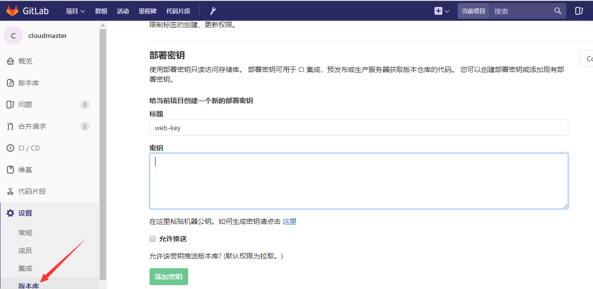

Git使用
Git上传本地项目
1.绑定用户，全局配置
git config --global user.name “xxx” #GitLab中文名
git config --global user.email xxx@xxx.com #邮箱
2.生成ssh key
ssh-keygen -t rsa -C “xxx\@xxx.com”
1）路径确认，直接按回车存默认路径即可
2）直接回车键，这里我们不使用密码进行登录, 用密码太麻烦;
3）直接回车键
默认路径为：c/Users/用户名/.ssh/id_rsa.pub
用写字板打开id_rsa.pub，打开gitlab点击setting版本库，把密钥粘贴到gitlab密钥，允许推送,，部署key后，可以不用用户密码直接获取代码

3.建立本地仓库
在项目根目录 路径
git init 创建git仓库（把该目录变成Git可以管理的仓库）
git add . 将所有文件从工作区添加到暂存区
git add file2.txt file3.txt 单个添加到暂存区
git commit -m "提交文件" 把文件提交到分支，双引号内是提交注释
注：commit可以一次提交很多文件，所以你可以多次add不同的文件
4.关联github仓库
git remote add origin https://gitlab.bingosoft.net/项目路径
git push origin master 上传本地代码到主干master
git pull origin master 同步远程主机分支代码到本地（慎重：容易把本地最新代码弄丢）
二．Git从远程库克隆
git config --global http.sslVerify false 不验证ssl证书
git clone https://gitlab.bingosoft.net/cmbcmp/BSPRJ2018110.git
三．扩展
git branch xxx 创建一个分支
git checkout xxx 切换分支
git branch 查看当前所处分支
git status 仓库当前的状态
git diff 具体修改了什么内容
git log [--pretty=oneline] 查看从最近到最远时间的提交日志
git reset --hard HEAD\^ 回退到上一个版本
git reflog 记录每一次命令，包括commit id
git reset --hard 1093a 回退到某个commit id的版本
参考文献：廖雪峰Git教程